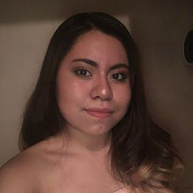

"I founded Smart is Strong in the summer of 2017 because I saw a need for feminism to acknowledge that some of the broader women's issues that exist in society either come from or are reproduced by our classrooms and universities. As both a researcher and as a student, I have always been very intrigued by the sociology of education and supply side effects when it comes to women in the workplace. As Ivy League students, we have been given a lot of privilege through our education, and I feel that it is important for us to try to give back and elevate those who have not been afforded the same privileges." -Elena Gupta, President and Founder
Officer Committee
Elena Gupta '19
President | Founder
Gita Connolly '19
Vice President (Studying Abroad)
Keya Gangadharan '19
Interim Vice President
Grace Kaiser '18
Secretary
Jessica Guarnizo '19
Treasurer
"I wanted to get involved with SiS because I wanted to help empower women the same way I was inspired by other great woman leaders. Surrounding myself with this incredible executive board who is passionate about advocating women's rights has deepened my urge to help other women find their voice and not be afraid to stand up and speak out." -Keya Gangadharan, Interim Vice President
VP Committee
Diana Ceron '20​
Anekha Goyal '21
Masa Haddad '21
Hannah Faulwell '22
"I'm involved in SIS because I wanted to help others utilize resources surrounding them by providing my attention and knowledge in the areas they seek advice in. I wanted to be able to help lead a nonprofit whose specific mission is to inspire and encourage women through community service and outreach activities, and my position as Outreach Director has enabled me to make a wide range of different contacts both within Cornell's faculty and students, as well as outside in the Ithaca communities surrounding us. I'm proud to be a part of an organization with such dedicated, driven members." -Selin Edebali, Outreach Director
Outreach Committee

Selin Edebali '20
Outreach Director
Joy Li '19
Sneha Sharma '21
Emily Levin '21
"I am involved in SIS because I want to show that men can and should be feminists. Traditional masculinity does not permit men to concede to women, even when men are wrong. I enjoy that SIS works at a local level to show that gender equality is necessary and achievable." -Christopher Morales, Public Relations Director
Public Relations Committee
Christopher Morales '20
Public Relations Director
Sundas (Sana) Wiqas '18
Mia SeungEun Lee '21

Estefany Dominguez '21
Wanxing Lu '21
Webmaster